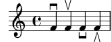

Améliorations pour les cordes non frettées
- Les indications
\upbowet\downbowsont désormais correctement inversées lorsque placées sous la portée. En conséquence, les glyphesscripts.upbowetscripts.downbowont été respectivement renommés enscript.uupbowetscripts.udownbow, et les glyphes inversés nommésscripts.dupbowetscripts.ddownbow.\relative c' { f4^\downbow f^\upbow f_\downbow f_\upbow }
